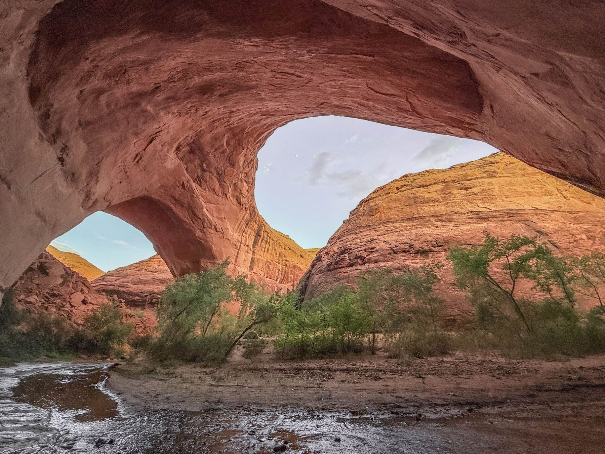
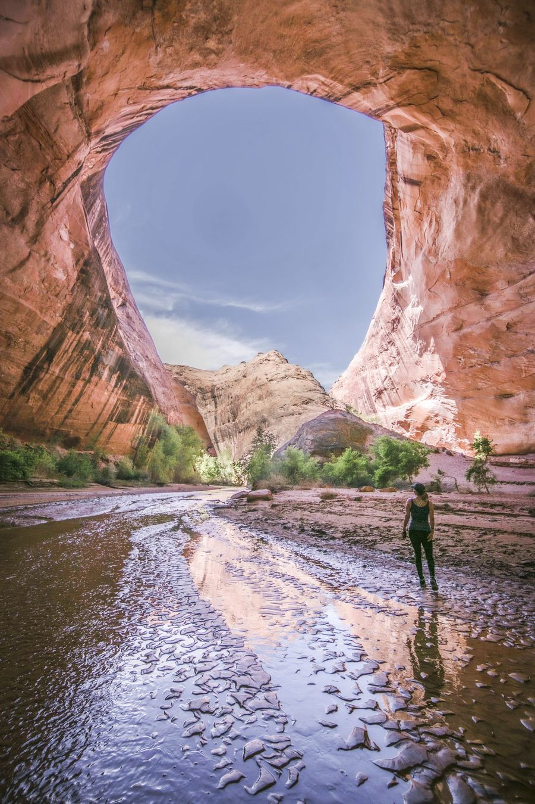
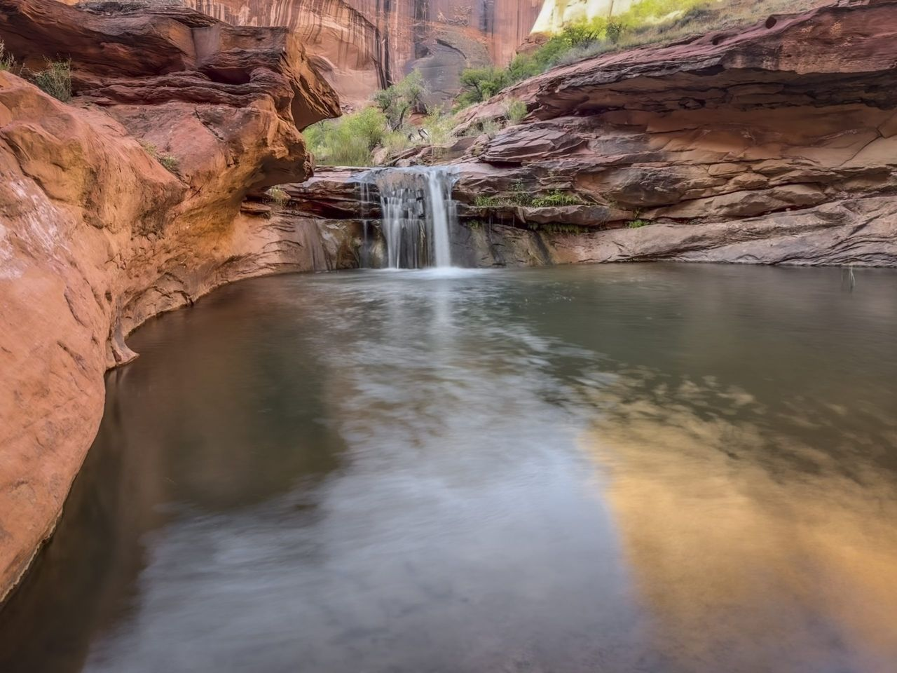
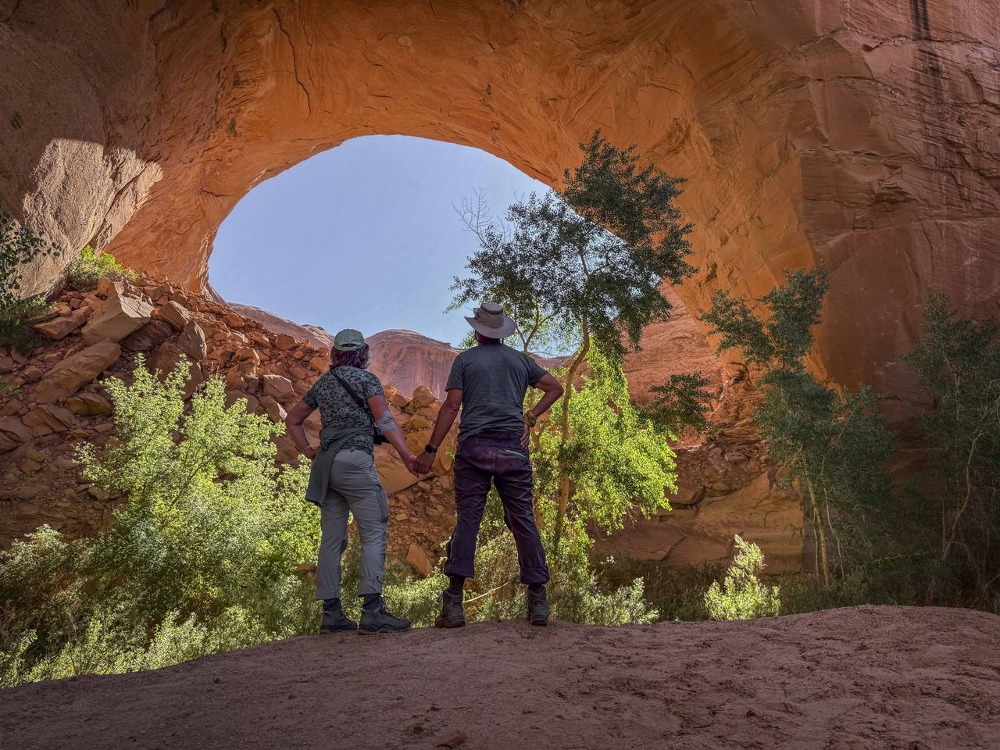
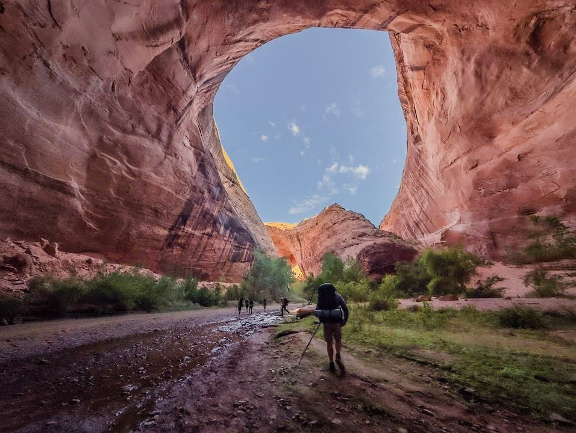

Coyote Gulch is a four-day guided backpacking trip in Grand Staircase-Escalante, in southern Utah. We hike 5 to 8 miles a day down a creek-carved canyon, past Jacob Hamblin Arch, Coyote Natural Bridge and Cliff Arch to the Escalante River, and back out the same way. The trip starts and ends in the town of Escalante and runs in spring and fall. Motivated first-time backpackers are welcome.
Our guides like to say the reward-to-effort ratio is high on this one. Soaring red walls, arches, alcoves, waterfalls and swimming holes, all on moderate miles with very little climbing.
Is this trip for you?
This is a trip for avid hikers, and motivated, fit first-time backpackers are welcome.
- You need good cardio fitness and the ability to carry about 35 pounds for four days in a row, 5 to 8 miles a day, on uneven ground.
- You will walk in water. The route crosses the creek many times, and some stretches can only be waded. Your shoes will be wet. It is not as bad as it sounds, and we help you get ready.
- Some sections involve mild scrambling, so good mobility is a must. Our route has no exposed climbing.
- There is very little elevation change. We go in and come out the same way.
On our own scale of 1 to 10 this trip is a 4, similar to our Reflection Canyon and Boulder Mail Trail trips. When you want a harder next step, look at Buckskin Gulch and Paria Canyon.
Not sure this is the right trip for you? Call us at (801) 251-6036* and we will talk it through.
One honest note
You will not have Coyote Gulch to yourself. It is a desert paradise, and in spring and fall plenty of other people know it. The canyon still gives you mile after mile of room, and there are usually plenty of scenic campsites to choose from.
The trip, day by day
Four days on the trail, with an arrival day before and a departure day after. Both evenings in Escalante are part of the trip.
- Arrival dayBe in Escalante by 5 pm
Check in, then meet the team at 5 pm for introductions, the gear check and the trip briefing. Around 7 pm we sit down together for the welcome dinner.
- Trail day 1About 5 miles
Breakfast, then the drive down historic Hole-in-the-Rock Road to the Hurricane Wash trailhead. We shoulder our packs, hike about 5 miles and make the first camp.
- Trail days 2 and 35 to 8 miles a day
We walk the length of Coyote Gulch, past Jacob Hamblin Arch, Coyote Natural Bridge and Cliff Arch, toward the Escalante River. Then we turn around and follow the canyon back. The views are spectacular in both directions.
- Trail day 4Out to the trailhead
We hike back to the Hurricane Wash trailhead and drive to Escalante. Showers first, then the team celebration dinner.
- Departure dayNothing scheduled
Sleep in, have breakfast and head home when you like.
Why the two evenings matter
We ask every guest to arrive the afternoon before, because a rushed start makes for a worse trip. The gear check and the welcome dinner are where a group of strangers becomes a team. The celebration dinner on the last evening is part of the trip too, so please do not plan a flight or a long drive that night.
What the price includes
Included for every guest
- Experienced backpacking guides, one for every four guests, each a certified Wilderness First Responder
- The 5 pm gear check and briefing, the welcome dinner and the celebration dinner in Escalante
- Breakfasts and dinners on the trail, with coffee and tea
- Light lunches on the trail*
- Trailhead transport from and to Escalante
- Overnight permits
- A lightweight tent, unless you prefer to bring your own
- A loaner backpack, sleeping bag and sleeping pad*
- Trekking poles*
- Team cooking gear and water purification
- A team first-aid kit and a satellite messenger for emergencies
- Human waste bags where the land agency requires them
- A trip handbook, a gear list and advice on gear and training before you come
Not included
- Travel to Escalante
- Personal snacks, and your own bowl, cup and spoon
- Clothing and footwear
- Guide gratuity. A typical tip is $20 to $40 per person per day.
- Sales tax and public land use fees*
Hotel nights, optional
Add two nights at the team hotel in Escalante: the arrival night and the night of trail day 4. $200* per person sharing a room. A private room costs more*.
We recommend it. The whole team stays under one roof, and we handle the booking. If you arrange your own bed, we ask where in Escalante you are staying, so we know everyone is in town for the 5 pm gear check.
What you carry and what you bring
Expect a pack of 35 to 40 pounds. That includes about 5 pounds of team gear, up to three liters of water, your snacks and your share of the food.
- Bottles or a bladder for three liters of water
- Shoes that can get wet: synthetic hiking boots or trail shoes without a waterproof membrane. Our guide to shoes for water hiking explains why.
- A down jacket and a rain jacket
- Hiking clothes
- A bowl, a cup and a spoon
- Your favorite snacks
You receive the full gear list and the trip handbook when you book.
2027 dates
Each departure needs at least four guests and takes at most ten, with two guides.
| Arrive by 5 pm | On the trail | Depart | Departure |
|---|---|---|---|
| Tuesday, April 13* | April 14 to 17 | April 18 | Open to all |
| Late April* | Date to be set | Learn to backpack | |
| Tuesday, May 11* | May 12 to 15 | May 16 | Open to all |
| Monday, June 7 | June 8 to 11 | June 12 | Open to all |
| Sunday, September 12* | September 13 to 16 | September 17 | Open to all |
| Friday, October 15* | October 16 to 19 | October 20 | All-women team |
A 50% deposit holds your place, and the balance is due 30 days before departure. Other dates, shorter itineraries and private trips for your own group are possible: call us or write to hello@dreamlandtours.net.
What guided Coyote Gulch trips cost
You should be able to compare. These are the list prices for a four-day guided Coyote Gulch trip, read on each outfitter's own page on November 24, 2026.
| Outfitter | List price | Trail days | Per trail day | Hotel nights | Starts from |
|---|---|---|---|---|---|
| Dreamland Safari Tours | $1,745* | 4 | $436* | Optional add-on | Escalante |
| Four Season Guides | $2,025 | 4 | $506 | Not stated | Not stated |
| Wildland Trekking | $2,050 | 4 | $513 | Add-on on request | St. George, a 5-hour drive |
| Backcountry Found | $1,250 | 4 | $313 | Not stated | Escalante |
If you own your gear and want the lowest price, Backcountry Found is the leaner choice. We are the full-service choice that starts in Escalante. See every route and every outfitter in our price comparison.
Guides and safety
- Every backpacking guide on this trip is a certified Wilderness First Responder.
- We bring one guide for every four guests, and never more than ten guests.
- Your guides carry a satellite messenger and a team first-aid kit.
- We make the weather calls. Trips run rain or shine unless there is a safety concern.
- Dreamland has been guiding in this desert since 2001.






What backpacking guests say
But the best part was Sunny's competency in not only leading the trip, but invoking a camaraderie and chemistry amongst a group of strangers that will inevitably lead to long term friendships.
We trained the whole year in advance and did great, we were aged 34-68, and I'm heavy enough that people don't reach for the term "athletic" when they see me, but we all did great.

Watch the Coyote Gulch videoQuestions guests ask
Do I need backpacking experience for Coyote Gulch?
No. Motivated, fit first-time backpackers are welcome. You need good cardio fitness and the ability to carry about 35 pounds for four days in a row, 5 to 8 miles a day, on uneven ground. If this would be your first trip, read what a first backpacking trip is really like.
Will my feet get wet?
Yes. The route crosses the creek many times, and some stretches can only be waded. You will hike in wet shoes at times. It is not as bad as it sounds. Bring synthetic hiking boots or trail shoes without a waterproof membrane, and read our guide to shoes for water hiking.
How heavy will my pack be?
Expect 35 to 40 pounds. That includes about 5 pounds of team gear, up to three liters of water, your snacks and your share of the food.
What do we eat?
We provide breakfasts and dinners on the trail*, with coffee and tea. Expect fresh meals and the occasional freeze-dried backpacker's meal. Tell us about dietary restrictions ahead of time and we can accommodate many of them. The welcome dinner and the celebration dinner in Escalante are included too.
Is there a bathroom?
No. There are no outhouses in Coyote Gulch. We bring human waste bags where the land agency requires them, and your guides explain the routine at the gear check.
Do I need a permit?
Grand Staircase-Escalante National Monument and the Escalante District of Glen Canyon National Recreation Area require overnight permits. We take care of them for you.
How crowded is Coyote Gulch?
Spring and fall are busy, and you will see other groups. The canyon is long, and there are usually plenty of scenic campsites to choose from.
How do I get to Escalante?
Escalante is a small desert town and public transport is very limited, so most guests drive or rent a car. If you are flying in and would like to avoid renting a car, call us. We may be able to help with a carpool or an airport pick-up. There is a safe place to leave your vehicle during the trip.
Do I have to book the hotel through you?
No. The two hotel nights are an optional add-on at $200* per person sharing a room. What is not optional is the timing: every guest is in Escalante for the 5 pm gear check on arrival day, and both team dinners are included in your trip price whether or not you take the hotel.
What are the deposit and cancellation terms?
A 50% deposit is due when you book, and the balance is due 30 days before departure. If you cancel 91 days or more before departure, your deposit can be moved to another Dreamland trip within 24 months of booking. Closer in, the fee is 20% of the full trip price at 61 to 90 days, 30% at 31 to 60 days, 40% at 8 to 30 days, 70% from 7 days to 48 hours, and 100% within 48 hours. The full wording is on our policies page.
What happens in bad weather?
Our trips run rain or shine unless there is a safety concern, and we make the weather calls. A reroute for weather or safety is not a reason for a refund. If we cancel a trip, you receive a full refund.
Should I tip the guides?
Tipping is customary. A typical gratuity is $20 to $40 per person per day.
Can we go as a private group or on other dates?
Yes. We run private Coyote Gulch trips on custom dates, including shorter itineraries and routes with more scrambling. Call us at (801) 251-6036 or write to hello@dreamlandtours.net.
Ready for Coyote Gulch?
From $1,745* per person. Four days on the trail, both team dinners included.
Read before you go
Placeholder: the email course is not built yet
Your first desert backpack, free by email
Six short emails from Dreamland's guides on water, heat, feet, gear and what a day on the trail looks like.
This block replaces the pop-up for the general Southern Utah itinerary that the current page shows.
For Sunny and Paul: open before this page can go live
Placeholders
- The trip price ($1,745) and the hotel nights ($200) stand in until Paul gives the hotel rate in Escalante. The private-room price is not set.
- The loaner backpack, sleeping bag and pad were decided on November 24. The kit has to exist before the page says so in public.
- The learn-to-backpack departure in late April has no date yet.
Questions
- Trail lunches: the current page says "breakfasts and dinners" in one place and "breakfasts, dinners, and light lunches" in another.
- Trekking poles: the current page lists them as provided and also as a rental.
- Phone: this page uses (801) 251-6036 from the site header. The current page also shows 801-760-6553 and 435-644-5506.
- 2027 dates: the current page lists four of the five departures as seven days long (April 13-19, May 11-17, September 12-18, October 15-21). This page keeps each arrival date and shows six days. Please confirm which end is right.
- Sales tax and public land use fees: the current page gives no percentages. Should this page state them?
- Guest words: the current page has no review from a Coyote Gulch trip, and Peek holds none for this product. The two shown are from other Dreamland backpacking trips.
- Photos are the ones on the current page. No landmark is named in a caption because I could not confirm which arch each photo shows.
- The comparison names three other outfitters, and the line under it recommends Backcountry Found to guests who own their gear. Keep, soften or cut.